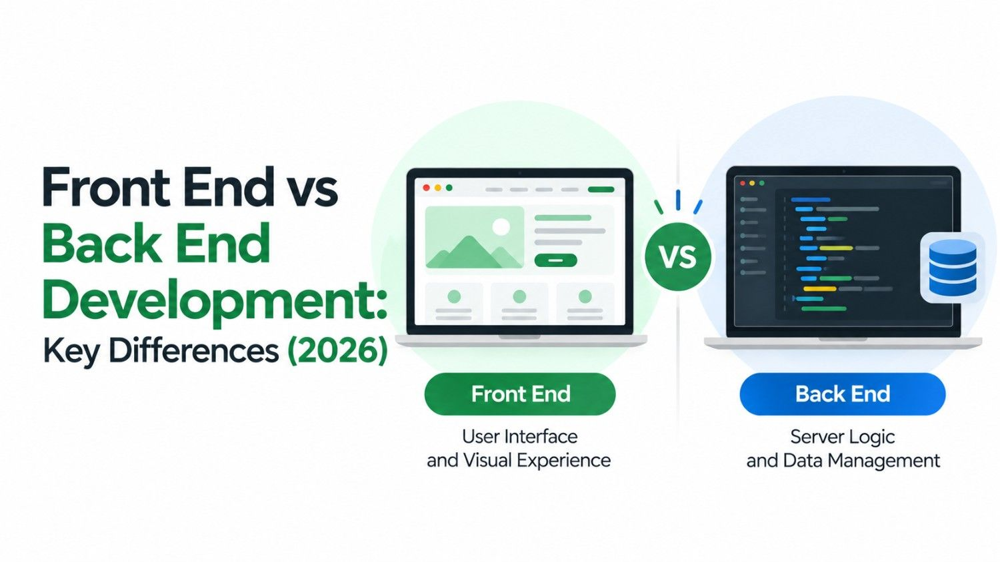

If you have ever had a website built - or are planning to - you've probably heard the terms front end and back end development thrown around. These two disciplines form the backbone of every website and web application on the internet. But what do they actually mean, what do developers in each area do, and why does it matter for your business?
This guide explains both sides in plain language, so you can make smarter decisions when investing in your digital presence.
What Is Front End Development?
Front end development refers to everything a user sees and interacts with directly in their browser. It is the visible layer of a website - the layouts, buttons, menus, colours, animations, and forms that make up the user experience. Front end developers are responsible for translating a design into a working, interactive interface.
The three core technologies of front end development are:
- HTML (HyperText Markup Language): The structural skeleton of a web page - headings, paragraphs, images, and links.
- CSS (Cascading Style Sheets): Handles the visual presentation - colours, fonts, spacing, and layout.
- JavaScript: Adds interactivity and dynamic behaviour - dropdown menus, form validation, animated elements, and more.
Modern front end developers also work with frameworks like React, Vue, and Next.js to build complex, fast-loading interfaces. A helpful free tool to experiment with front end code live is CodePen - it lets you write HTML, CSS, and JavaScript in your browser and see results instantly, making it a great learning and prototyping playground.
What Is Back End Development?
Back end development is everything that happens behind the scenes - the server, the database, and the logic that powers a website's functionality. Users never directly see the back end, but they experience its effects every time they log in, submit a form, make a purchase, or see personalised content.
Back end developers work with technologies like Node.js, Python, PHP, and Ruby, alongside databases such as MySQL, PostgreSQL, and MongoDB. They build the APIs and server logic that connect the user-facing front end to the data and business rules that make a product work.
Front End
- Runs in the browser
- HTML, CSS, JavaScript
- React, Vue, Next.js
- Layouts & animations
- User interaction
Back End
- Runs on the server
- Node.js, Python, PHP
- MySQL, MongoDB APIs
- Data & business logic
- Security & authentication
Key Differences at a Glance
While both disciplines are essential, they differ in focus, skill set, and output. Here is a quick breakdown:
| Aspect | Front End | Back End |
|---|---|---|
| Visible to users? | Yes - all of it | No - runs server-side |
| Primary concern | Look, feel & UX | Performance, data & logic |
| Core tools | HTML, CSS, JS | Python, Node, SQL |
| Output | Interfaces & pages | APIs & databases |
Need a Website That Performs on Both Sides?
Our team handles full-stack development - from pixel-perfect design to rock-solid infrastructure.
What About Full Stack Development?
A full stack developer is someone who is proficient in both front end and back end technologies. They can build an entire web application from scratch - handling everything from the user interface to the database and server configuration. Full stack developers are highly versatile and are particularly valuable for startups and small businesses that need a single developer to manage an entire project.
For a deeper technical understanding of the browser environment where front end code runs, MDN Web Docs by Mozilla is the industry-standard free reference for web developers at all levels - covering HTML, CSS, JavaScript, and web APIs in depth.
Which Does Your Business Need?
The answer depends on what you are trying to build. A simple brochure website or landing page is almost entirely a front end concern - it needs to look great, load quickly, and guide visitors towards an action. An e-commerce platform, a booking system, or a membership portal requires substantial back end work: user accounts, payment processing, inventory management, and secure data storage.
Most modern businesses need both - which is why partnering with a development team that covers the full spectrum is so valuable. As one of the leading web development companies in Kerala, Bamboost builds end-to-end solutions that are just as solid under the hood as they are beautiful on the surface.
Conclusion
Front end and back end development are two halves of the same whole. The front end delivers the experience your customers see and feel; the back end powers the functionality that makes it all work. Understanding the difference helps you ask better questions, set the right expectations, and invest in the development work that actually moves your business forward.
Whether you need a fast, visually stunning website or a complex web application built for scale, getting both sides right from the start is what separates a great digital product from an average one.